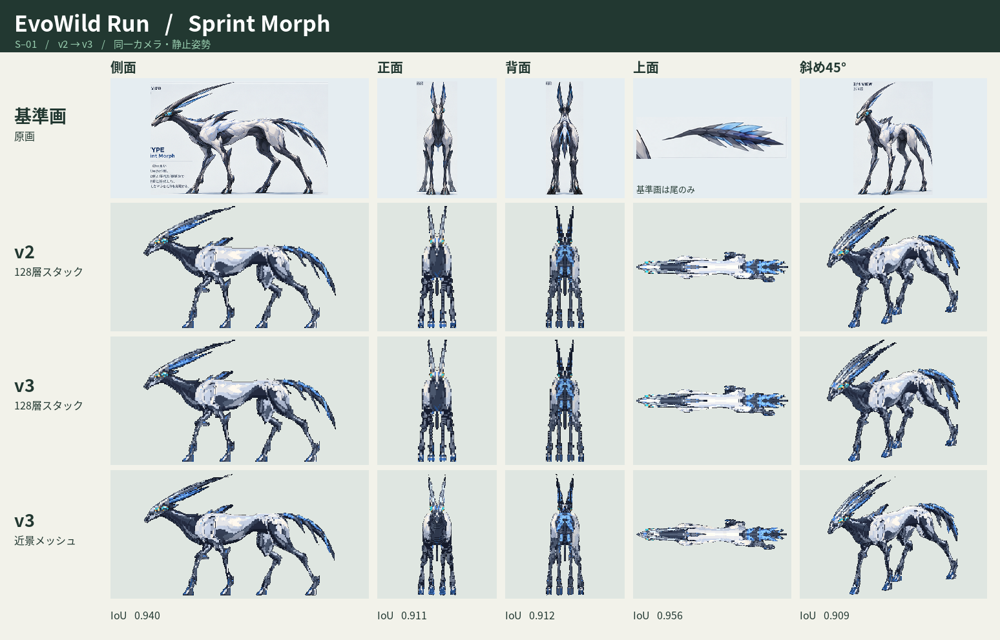

REVISE 共通原本と近景描画は継続採用。近景を含む群走のレース標準は保留。
PC幅で10体すべてが近景に映るカーブ走行は平均 31.03 fps。100体の混在走行はv2の 0.82 fpsから 18.00 fpsに改善したが、目標30 fpsを下回った。同条件のGPU時間は 1199.2 msから 36.8 ms、p95フレーム時間は 1903.9 msから 80.7 ms。全景だけでは判定していない。
| 平均fps | 近景 1体 | 近景 10体 | 混在 50体 | 混在 100体 | 全景 100体 |
|---|---|---|---|---|---|
| PC幅・v2 | 20.43 | 5.11 | 1.73 | 0.82 | 34.38 |
| PC幅・v3 | 40.37 | 31.03 | 22.83 | 18.00 | 35.31 |
| スマホ幅・v2 | 22.72 | 3.48 | 1.29 | 0.81 | 48.13 |
| スマホ幅・v3 | 58.85 | 44.00 | 28.12 | 17.27 | 43.94 |
全条件で走行、コースの曲がり、カメラ旋回、俯角と倍率の変化を同時に与えた。v2・v3の全48フレームの姿勢時刻、方位、俯角、倍率、画面寸法を突き合わせた。PCは1280×900・描画877×414。スマホ幅は390×844・描画352×335・CPU 4倍減速のタッチエミュレーション。物理スマホは未計測。
| 表示 | 条件 | 版 | fps | p95 ms | GPU ms | 同期込 ms | 三角形 | draw | GL MiB | JS MiB | RSS MiB |
|---|---|---|---|---|---|---|---|---|---|---|---|
| PC幅 | 近景 1体 | v2 | 20.43 | 80.9 | 31.41 | 43.93 | 34,459 | 3.0 | 67.9 | 3.7 | 940 |
| PC幅 | 近景 1体 | v3 | 40.37 | 49.5 | 11.78 | 23.41 | 1,591 | 3.0 | 90.6 | 3.9 | 1063 |
| PC幅 | 近景 10体 | v2 | 5.11 | 235.7 | 183.32 | 188.59 | 344,431 | 12.0 | 67.9 | 4.3 | 912 |
| PC幅 | 近景 10体 | v3 | 31.03 | 57.3 | 15.77 | 29.88 | 10,409 | 12.0 | 93.1 | 5.0 | 1031 |
| PC幅 | 混在 50体 | v2 | 1.73 | 684.5 | 559.24 | 568.43 | 1,105,712 | 28.0 | 67.9 | 3.9 | 872 |
| PC幅 | 混在 50体 | v3 | 22.83 | 77.2 | 30.21 | 39.31 | 27,288 | 38.0 | 95.7 | 3.6 | 944 |
| PC幅 | 混在 100体 | v2 | 0.82 | 1903.9 | 1199.15 | 1210.96 | 1,903,634 | 28.0 | 67.9 | 5.1 | 866 |
| PC幅 | 混在 100体 | v3 | 18.00 | 80.7 | 36.79 | 50.11 | 52,107 | 64.0 | 96.6 | 3.4 | 941 |
| PC幅 | 全景 100体 | v2 | 34.38 | 54.5 | 15.47 | 27.71 | 7,301 | 3.0 | 68.0 | 6.5 | 869 |
| PC幅 | 全景 100体 | v3 | 35.31 | 55.0 | 14.16 | 25.59 | 7,301 | 3.0 | 96.6 | 4.1 | 942 |
| スマホ幅 | 近景 1体 | v2 | 22.72 | 63.0 | 33.23 | 40.69 | 34,459 | 3.0 | 62.3 | 3.8 | 867 |
| スマホ幅 | 近景 1体 | v3 | 58.85 | 30.1 | 5.00 | 11.13 | 1,174 | 3.0 | 89.6 | 4.0 | 1009 |
| スマホ幅 | 近景 10体 | v2 | 3.48 | 350.5 | 275.78 | 284.22 | 344,431 | 12.0 | 62.3 | 3.9 | 841 |
| スマホ幅 | 近景 10体 | v3 | 44.00 | 45.9 | 12.69 | 19.78 | 10,409 | 12.0 | 92.1 | 4.3 | 976 |
| スマホ幅 | 混在 50体 | v2 | 1.29 | 906.1 | 757.75 | 767.76 | 1,059,790 | 28.0 | 62.3 | 4.3 | 807 |
| スマホ幅 | 混在 50体 | v3 | 28.12 | 60.0 | 25.32 | 33.02 | 26,103 | 35.4 | 94.0 | 5.6 | 984 |
| スマホ幅 | 混在 100体 | v2 | 0.81 | 1417.6 | 1223.70 | 1233.16 | 1,684,937 | 28.0 | 62.3 | 3.8 | 803 |
| スマホ幅 | 混在 100体 | v3 | 17.27 | 81.8 | 41.09 | 51.05 | 50,331 | 58.8 | 94.7 | 5.2 | 880 |
| スマホ幅 | 全景 100体 | v2 | 48.13 | 44.4 | 9.14 | 17.56 | 7,301 | 3.0 | 62.3 | 5.0 | 807 |
| スマホ幅 | 全景 100体 | v3 | 43.94 | 46.0 | 12.35 | 20.11 | 7,301 | 3.0 | 94.7 | 4.8 | 881 |
Chromium 151.0.7922.173、ANGLE / SwiftShader、DPR 1。3フレームの予熱後、各RAFで1画素を同期読出し。GPU列はEXT_disjoint_timer_query_webgl2の経過時間。三角形とdrawは床・影込みのフレーム平均。GLは実際のバッファ・テクスチャ・レンダーバッファの論理割当、RSSはChromeのプロセス和で共有ページの重複を含む。速度は定常状態を評価した。20条件CSV ／ v2 生データ ／ v3 生データ
| 表示 | 条件 | 近 | 中 | 移行 | 遠 | 画面外 | 中心が画面内（最小–最大） |
|---|---|---|---|---|---|---|---|
| PC幅 | 近景 1体 | 1.0 | 0.0 | 0.0 | 0.0 | 0.0 | 1–1 |
| PC幅 | 近景 10体 | 10.0 | 0.0 | 0.0 | 0.0 | 0.0 | 10–10 |
| PC幅 | 混在 50体 | 24.0 | 8.0 | 3.2 | 14.8 | 0.0 | 50–50 |
| PC幅 | 混在 100体 | 42.2 | 10.3 | 11.7 | 35.8 | 0.0 | 98–100 |
| PC幅 | 全景 100体 | 0.0 | 0.0 | 0.0 | 100.0 | 0.0 | 100–100 |
| スマホ幅 | 近景 1体 | 1.0 | 0.0 | 0.0 | 0.0 | 0.0 | 1–1 |
| スマホ幅 | 近景 10体 | 10.0 | 0.0 | 0.0 | 0.0 | 0.0 | 10–10 |
| スマホ幅 | 混在 50体 | 22.7 | 8.0 | 1.9 | 16.1 | 1.3 | 41–50 |
| スマホ幅 | 混在 100体 | 41.4 | 5.9 | 12.6 | 36.1 | 3.9 | 79–94 |
| スマホ幅 | 全景 100体 | 0.0 | 0.0 | 0.0 | 100.0 | 0.0 | 100–100 |
静止1姿勢、走行24姿勢の原本は17色＋透明の整数格子。原本から再生成した各姿勢の64/128層はv2と全セルの色・占有位置が一致した。128層から原本への復元でも差分0。48方位×10俯角×25姿勢の遠景は、入力・生成コード・ページのハッシュを確認してv2と共有する。一時原本の静止姿勢だけで色番号を交換する検査では、480方向に色差が現れ、走行24姿勢の色差と深度ページの差はいずれも0。原本・形式・SHA256 ／ 往復検証 ／ 再生成検証
静止姿勢の色付きGreedy Meshingは 16,127 四角形。閉じた空洞の面を捨てて 16,079、色を別テクスチャに分離して2方向の走査から長方形を選ぶと 9,528。近景には原本の外表面から頭冠・四脚・尾の端点を拘束して簡略化したメッシュを使用し、色は原本から引く。48方位の遠景にはv2の深度スプライトを使用する。25姿勢の面数
| メッシュ | 三角形/体 最小–最大 | 原本占有体積に対する比率 |
|---|---|---|
| fine | 2,590–2,600 | 96.4–97.4% |
| race | 1,390–1,400 | 93.1–95.3% |
| mid | 644–650 | 85.3–89.4% |
全姿勢の頂点を共有バッファ化し、同じ姿勢・LOD・視線区間の個体をインスタンス描画する。視線区間の全域、かつ支持脚補正の両端で裏を向く三角形を発行前に除外した。完全な面リストと比べた192画面で変化した画素は 0、最大色差は 0/255。レースでは追加MSAAを外し、拡大した単体標本と積層比較にはサンプル被覆を使用する。背面除去の画素検査
| 条件 | 変更点 | フレーム | fps | GPU ms | 三角形/フレーム |
|---|---|---|---|---|---|
| 混在 100体 | 全表面インデックス | 48 | 16.63 | 44.28 | 76,651 |
| 混在 100体 | 視線方向で背面を除外 | 48 | 18.29 | 41.45 | 52,107 |
| 近景 1体 | 単体・追加MSAAなし | 32 | 39.75 | 12.20 | 1,594 |
| 近景 1体 | 単体・2サンプル要求 | 32 | 30.99 | 17.04 | 1,594 |
| 近景 1体 | 単体・4サンプル要求 | 32 | 33.31 | 13.39 | 1,594 |
| 近景 1体 | 原本のレイ描画 | 24 | 30.20 | 19.39 | 456 |
| 近景 10体 | 原本のレイ描画 | 24 | 13.60 | 56.62 | 4,704 |
いずれもPC幅。サンプル数はWebGLに要求した値。原本レイ描画は疎なブロックごとにセルを交差判定し深度を書き込む。5方向の単体静止で同じ単一サンプルの積層と比較した輪郭IoUは 0.992–0.998。近景10体ではピクセルごとの交差判定が重く、標準LODには軽量メッシュを選んだ。原本レイ画素比較 ／ 追加計測

比較は同じ姿勢・画角・縮尺。元の設計画に上面の全身はなく、尾の資料を示した。各画面の上25%を頭冠域、下18%を脚先域、横向きの端18%を尾域として計測した。これらは画面領域で、解剖学的な部位の切り抜きとは異なる。
| 全24姿勢×5方向 | メッシュ IoU中央値 | 実際のLOD IoU中央値 | 実際のLOD IoU最小値 |
|---|---|---|---|
| 全身 | 0.854 | 0.842 | 0.802 |
| 頭冠を含む上端 | 0.729 | 0.723 | 0.592 |
| 足先を含む下端 | 0.747 | 0.733 | 0.668 |
| 尾の末端 | 0.759 | 0.741 | 0.623 |
体長156 pxで2°ずつ360°回転したとき、頭冠域で1コマだけ有無が反転した割合はv2積層 0.62%、v3距離LOD 0.83%。脚先域は 0.53%、0.87%。手前・遠方を連続でまたぐ73フレームの輪郭IoU中央値 0.897、積層との差を差し引いたフレーム間重心移動は最大 1.18 px。小さい頭冠・足先の被覆と近遠混在時のフレーム時間が残る課題である。全24ポーズ ／ 切替の比較図 ／ 画素計測 ／ 操作・急な俯角変更
回転、24姿勢、切替比較の3本は時刻指定の24 fps。近景10体・混在50体・混在100体は実時間のカーブ走行録画で、遅い描画は映像でもその時間だけ保持している。録画時の固有描画回数は順に 57、51、43。録画時刻とLODの内訳
git switch exp/s-pixel-stacking-zero-20261121 python3 -m http.server 4173 --bind 127.0.0.1 --directory public
ローカルの /s-pixel-lab/v3/index.html を開く。生成と計測の全コマンドはリポジトリの 再現手順。